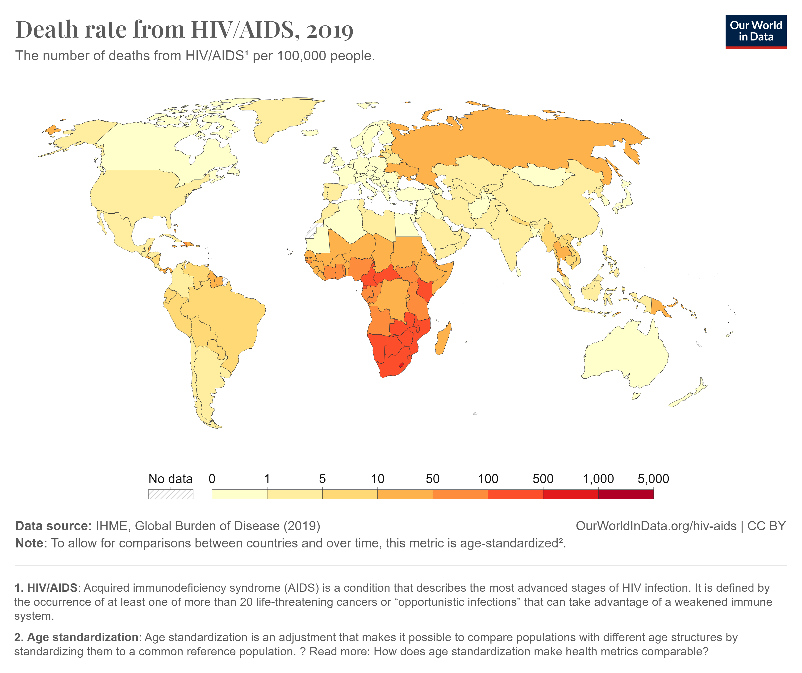

Información Principal
Información Detallada
-
Dato 1
Cada día, más de un millón de personas contraen una ITS -
Dato 2
La OMS estima que, en 2020, hubo 374 millones de nuevas infecciones de alguna de estas cuatro ITS: clamidiosis (129 millones), gonorrea (82 millones), sífilis (7,1 millones) y tricomoniasis (156 millones) -
Dato 3
Se estima que más de 500 millones de personas (de 15 a 49 años) tienen una infección genital por el virus del herpes simple (VHS o herpes) (1).